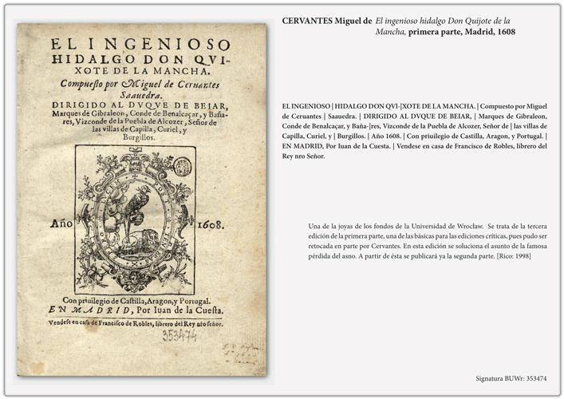
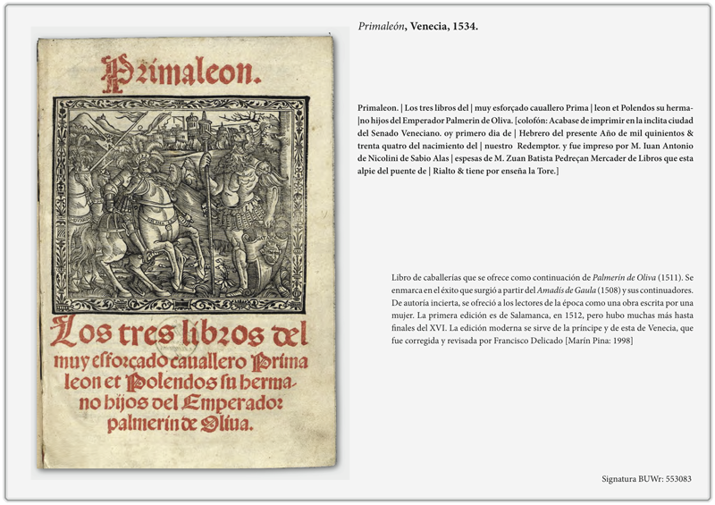
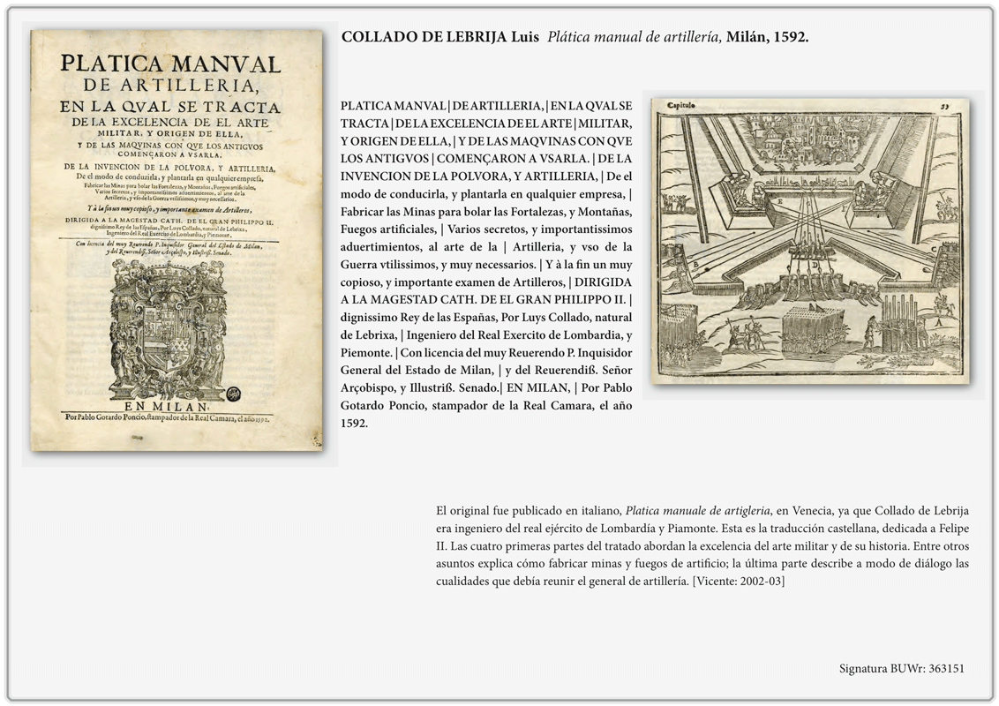

Autores españoles
en el fondo antiguo de la
Universidad de Wrocław
✽
history
provenance
Genre
~ 300 prints
Novela Picaresca
Mateo Aleman, Vitae Humanae proscenium: in quo sub persona Gusmani Alfaracii, traducción latina de Caspar Ens, Danzig, 1652 - Lubiąż BUWr
Mateo Alemán Vida y hechos del pícaro Guzmán de Alfarache. Atalaya de la vida humana, Amberes, 1681 BUWr
- Español: I parte, Tarragona, 1603 I parte, Amberes, 1681 II parte, Milán, 1603
- Alemán: Albertinus, München, 1616... // Frankfurt, 1670
- Italiano: Barezzo Barezzi, Venetia, 1615
- Latín: Caspar Ens, Vitae Humanae proscenium: in quo sub persona Gusmani Alfaracii Dantisci, 1652
Lazarillo, 1597 BUWr
Literatura Moral
El conde Lucanor, Sevilla, 1575 BUWr
Baltasar Gracián, Oráculo manual y arte de prudencia, Ámsterdam, 1659 BUWr
Baltasar Gracián
- Español
- Alemán
- Italiano
- Latín
- Francés

Grabado de la traducción de J. L. Sauter, Leipzig, 1686. BUWr
Lorentz Gratians Staats-Kluger Catholischer Ferdinand, traducción de Daniel Casper
von Lohenstein, Breslau, 1672. BUWr
Libros de caballerías

El ingenioso hidalgo Don Quijote de la Mancha, primera parte, Madrid, 1608 BUWr

Grabado de la traducción de J. L. Sauter, Leipzig, 1686. BUWr
Poesía, teatro, ...
Obras de Garcilaso de la Vega con Anotaciones de Fernando de Herrera, Sevilla, 1580 BUWr
Calderón de la Barca BUWr
Misceláneas, silvas, técnica

Platica manual de artillería, Milán, 1592 BUWr
Silva de varia lección BUWr
Historia
Historia de las cosas más notables, ritos y costumbres del Gran Reino de la China, Roma, 1585. BUWr
Historia de las cosas más notables, ritos y costumbres del Gran Reino de la China, Roma, 1585. BUWr
Silva de varia lección BUWr
Old prints catalogue
Old prints catalogue www.bu.uni.wroc.pl/katalogi/zdigitalizowane
credits
Baczyńska Beata, Losada Palenzuela José Luis, “Libros españoles en el fondo antiguo de la Universidad de Wrocław”, in: Actas del Congreso de la Asociación Internacional Siglo de Oro, Burgos-La Rioja 15-19 julio 2002 , ed. por. María Luisa Lobato, Francisco Domínguez Matito, Burgos, Iberoamericana Vervuert, 2004, pp. 1195-1202.
University of Wrocław (Poland)